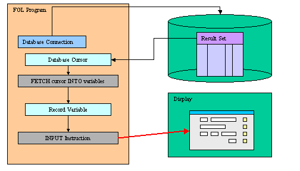
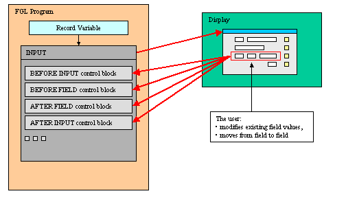
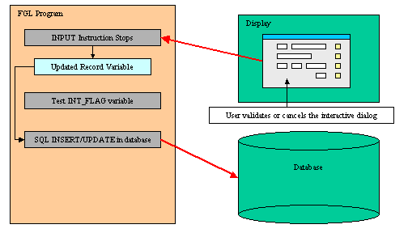

Summary:
See also: Variables, Records, Windows, Forms, Record Display, Display Array
The programs maintain data in variables and use the INPUT statement to bind variables to screen-records or screen-arrays of forms for data entry into form fields. The INPUT statement activates the current form (the form that was most recently displayed or the form in the current window):

During the INPUT statement execution, the user can edit the record fields, while the program controls the behavior of the instruction with control blocks:

To terminate the INPUT execution, the user can validate (or cancel) the dialog to commit (or invalidate) the modifications made in the record:

When the statement completes execution, the form is de-activated. After the user terminates the input (for example, with the Accept key), the program must test the INT_FLAG variable to check if the dialog was validated (or canceled), and then can use the INSERT or UPDATE SQL statements to modify the appropriate database tables.
The INPUT statement supports data entry into the fields of the current form.
INPUT BY NAME { variable | record.* } [,...]
[ WITHOUT DEFAULTS ]
[ ATTRIBUTES ( { display-attribute |
control-attribute } [,...]
) ]
[ HELP help-number ]
[ dialog-control-block
[...]
END INPUT ]
INPUT { variable | record.* } [,...]
[ WITHOUT DEFAULTS ]
FROM
field-list
[ ATTRIBUTES ( { display-attribute |
control-attribute } [,...]
) ]
[ HELP help-number ]
[ dialog-control-block
[...]
END INPUT ]
where dialog-control-block is one of:
{ BEFORE INPUT
| AFTER INPUT
| BEFORE FIELD field-spec [,...]
| AFTER FIELD field-spec [,...]
| ON CHANGE field-spec [,...]
| ON IDLE idle-seconds
| ON ACTION action-name [INFIELD field-spec]
| ON KEY ( key-name [,...] )
}
dialog-statement
[...]
where dialog-statement is one of:
{ statement
| ACCEPT INPUT
| CONTINUE INPUT
| EXIT INPUT
| NEXT FIELD { CURRENT | NEXT | PREVIOUS |
field-spec }
}
where field-list defines a list of fields with one or more of:
{ field-name
| table-name.*
| table-name.field-name
| screen-array[line].*
| screen-array[line].field-name
|
screen-record.*
|
screen-record.field-name
}
[,...]
where field-spec identifies a unique field with one of:
{ field-name
| table-name.field-name
| screen-array.field-name
|
screen-record.field-name
}
The following table shows the options supported by the INPUT statement:
| Attribute | Description |
| HELP help-number | Defines the help number when help is invoked by the user, where help-number is an integer literal or a program variable. See Warning below! |
| WITHOUT DEFAULTS | Indicates that the data rows are not filled (TRUE) with the column default values defined in the form specification file or the database schema files (Default is FALSE). See Warning below! |
The following table shows the display-attributes supported by the INPUT statement. The display-attributes affect console-based applications only, they do not affect GUI-based applications.
| Attribute | Description |
| BLACK, BLUE, CYAN, GREEN, MAGENTA, RED, WHITE, YELLOW | The TTY color of the displayed data. |
| BOLD, DIM, INVISIBLE, NORMAL | The TTY font attribute of the displayed data. |
| REVERSE, BLINK, UNDERLINE | The TTY video attribute of the displayed data. |
The following table shows the control-attributes supported by the INPUT statement:
| Attribute | Description |
| NAME = string | Identifies the dialog statement with a clear name. |
| HELP = help-number | Defines the help number when help is invoked by the user, where help-number is an integer literal or a program variable. See Warning below! |
| WITHOUT DEFAULTS [=bool] | Indicates if the data rows must be filled (FALSE) or not (TRUE) with the column default values defined in the form specification file or the database schema files. The bool parameter can be an integer literal or a program variable. See Warning below! |
| FIELD ORDER FORM | Indicates that the tabbing order of fields is defined by the TABINDEX attribute of form fields. The default order in which the focus moves from field to field in the screen array is determined by the order of the variables used by the INPUT statement. The program options instruction can also change this behavior with FIELD ORDER FORM options. |
| UNBUFFERED [ =bool] | Indicates that the dialog must be sensitive to program variable changes. The bool parameter can be an integer literal or a program variable. |
| CANCEL = bool | Indicates if the default cancel action should be added to the dialog. If not specified, the action is registered. The bool parameter can be an integer literal or a program variable. |
| ACCEPT = bool | Indicates if the default accept action should be added to the dialog. If not specified, the action is registered. The bool parameter can be an integer literal or a program variable. |
The following steps describe how to use the INPUT statement:
The program record member variables are bound to the fields of a screen record, so the INPUT instruction can manipulate the values that the user enters in the form fields.
The BY NAME clause implicitly binds the fields to the variables that have the same identifiers as the field names. You must first declare variables with the same names as the fields from which they accept input. The runtime system ignores any record name prefix when making the match. The unqualified names of the variables and of the fields must be unique and unambiguous within their respective domains. If they are not, the runtime system generates an exception, and sets the STATUS variable to a negative value.
The FROM clause explicitly binds the fields in the screen record to a list of program variables that can be simple variables or records. The form can include other fields that are not part of the specified variable list, but the number of variables or record members must equal the number of fields listed in the FROM clause. Each variable must be of the same (or a compatible) data type as the corresponding screen field. When the user enters data, the runtime system checks the entered value against the data type of the variable, not the data type of the screen field.
Warning: When using the FROM clause with a screen record followed by a .* (dot star), keep in mind that program variables are bound to screen record fields by position, so you must make sure that the program variables are defined (or listed) in the same order as the screen array fields.
The program variables can be of any data type: The runtime system will adapt input and display rules to the variable type. If a variable is declared with the LIKE clause and uses a column defined as SERIAL/SERIAL8/BIGSERIAL, the runtime system will treat the field as if it was defined as NOENTRY in the form file: Since values of serial columns are automatically generated by the database server, no user input is required for such fields. New generated serials are available in the SQLCA.SQLERRD[2] register for SERIAL columns, and with dbinfo('bigserial') for BIGSERIAL columns.
The variables act as data model to display data or to get user input through the INPUT instruction. Always use the variables if you want to change some field values programmatically. When using the UNBUFFERED attribute, the instruction is sensitive to program variable changes: If you need to display new data during the INPUT execution, just assign the values to the program variables; the runtime system will automatically display the values to the screen:
01INPUT p_items.* FROM s_items.* ATTRIBUTES (UNBUFFERED)02ON CHANGE code03IF p_items.code = "A34" THEN04LET p_items.desc = "Item A34"05END IF06END INPUT
When the INPUT instruction executes, any column default values are displayed in the screen fields, unless you specify the WITHOUT DEFAULTS keywords. The column default values are specified in the form specification file with the DEFAULT attribute, or in the database schema files.
If you specify the WITHOUT DEFAULTS option, however, the form fields display the current values of the variables when the INPUT statement begins. This option is available with both the BY NAME and the FROM binding clauses.
01LET p_items.code = "A34"02INPUT p_items.* FROM s_items.* WITHOUT DEFAULTS03BEFORE INPUT04MESSAGE "You should see A34 in field 'code'..."05END INPUT
If the program record has the same structure as a database table (this is the case when the record is defined with a LIKE clause), you may not want to display/use some of the columns. You can achieve this by used PHANTOM fields in the screen array definition. Phantom fields will only be used to bind program variables, and will not be transmitted to the front-end for display.
The ATTRIBUTES clause specifications override all default attributes and temporarily override any display attributes that the OPTIONS or the OPEN WINDOW statement specified for these fields. While the INPUT statement is executing, the runtime system ignores the INVISIBLE attribute.
The HELP clause specifies the number of a help message to display if the user invokes the help while the focus is in any field used by the instruction. The predefined 'help' action is automatically created by the runtime system. You can bind action views to the 'help' action.
Warning: The HELP option overrides the HELP attribute!
Indicates if the data rows must be filled (FALSE) or not (TRUE) with the column default values defined in the form specification file or the database schema files.
By default, the tabbing order is defined by the variable binding list in the instruction description. You can control the tabbing order by using the FIELD ORDER FORM attribute: When this attribute is used, the tabbing order is defined by the TABINDEX attribute of the form fields. If this attribute is used, the Dialog.fieldOrder FGLPROFILE entry is ignored.
The default order in which the focus moves from field to field in the screen array is determined by the order of the variables used by the INPUT statement. The program options instruction can also change the behavior of the INPUT instruction, with the INPUT WRAP or FIELD ORDER FORM options.
Indicates that the dialog must be sensitive to program variable changes. When using this option, you bypass the traditional "buffered" mode.
When using the traditional "buffered" mode, program variable changes are not automatically displayed to form fields; You need to execute a DISPLAY TO or DISPLAY BY NAME. Additionally, if an action is triggered, the value of the current field is not validated and is not copied into the corresponding program variable. The only way to get the text of the current field is to use GET_FLDBUF().
If the "unbuffered" mode is used, program variables and form fields are automatically synchronized. You don't need to display explicitly values with a DISPLAY TO or DISPLAY BY NAME. When an action is triggered, the value of the current field is validated and is copied into the corresponding program variable.
The ACCEPT attribute can be set to FALSE to avoid the automatic creation of the accept default action. This option can be used for example when you want to write a specific validation procedure, by using ACCEPT INPUT.
The CANCEL attribute can be set to FALSE to avoid the automatic creation of the cancel default action. This is useful for example when you only need a validation action (accept), or when you want to write a specific cancellation procedure, by using EXIT INPUT.
Note that if the CANCEL=FALSE option is set, no close action will be created, and you must write an ON ACTION close control block to create an explicit action.
When an INPUT instruction executes, the runtime system creates a set of default actions. See the control block execution order to understand what control blocks are executed when a specific action is fired.
The following table lists the default actions created for this dialog:
| Default action | Description |
| accept | Validates the INPUT dialog (validates fields) Creation can be avoided with ACCEPT attribute. |
| cancel | Cancels the INPUT dialog (no validation, int_flag is set) Creation can be avoided with CANCEL attribute. |
| close | By default, cancels the INPUT dialog (no validation, int_flag is set) Default action view is hidden. See Windows closed by the user. |
| help | Shows the help topic defined by the HELP clause. Only created when a HELP clause is defined. |
The accept and cancel default actions can be avoided with the ACCEPT and CANCEL dialog control attributes:
01INPUT BY NAME field1 ATTRIBUTES ( CANCEL=FALSE )02...
The BEFORE INPUT block is executed one time, before the runtime system gives control to the user. You can implement initialization in this block.
The AFTER INPUT block is executed one time, after the user has validated or canceled the dialog, and before the runtime system executes the instruction that appears just after the INPUT block. You typically implement dialog finalization in this block. The AFTER INPUT block is not executed if EXIT INPUT executes.
A BEFORE FIELD block is executed each time the cursor enters into the specified field, when moving the focus from field to field. The BEFORE FIELD block is also executed when using NEXT FIELD.
Warning: When using the default FIELD ORDER CONSTRAINT mode, the dialog executes the BEFORE FIELD block of the field corresponding to the first variable of the INPUT, even if that field is not editable (NOENTRY, hidden or disabled). The block is executed when you enter the dialog. This behavior is supported for backward compatibility. The block is not executed when using the FIELD ORDER FORM.
Warning: With the FIELD ORDER FORM mode, for each dialog executing the first time with a specific form, the BEFORE FIELD block might be fired for the first field of the initial tabbing list defined by the form, even if that field was hidden or moved around in a table. The dialog then behaves as if a NEXT FIELD first-visible-column would have been done in the BEFORE FIELD of that field.
The ON CHANGE block is executed when another field is selected, if the value of the specified field has changed since the field got the focus and if the "touched" field flag is set. The "touched" flag is set on user input or when doing a DISPLAY TO or a DISPLAY BY NAME. Once set, the "touched" flag is not reset until the end of the dialog.
For fields defined as RadioGroup, ComboBox, SpinEdit, Slider, and CheckBox views, the ON CHANGE block is fired immediately when the user changes the value. For other type of fields (like Edits), the ON CHANGE block is fired when leaving the field. You leave the field when you validate the dialog, when you move to another field, or when you move to another row in an INPUT ARRAY. Note that the dialogtouched predefined action can also be used to detect field changes immediately, but with this action you can't get the data in the target variables (should only be used to detect that the user has started to modify data)
If both an ON CHANGE block and AFTER FIELD block are defined for a field, the ON CHANGE block is executed before the AFTER FIELD block.
When changing the value of the current field by program in an ON ACTION block, the ON CHANGE block will be executed when leaving the field if the value is different from the reference value and if the "touched" flag is set (after previous user input or DISPLAY TO / DISPLAY BY NAME).
When using the NEXT FIELD instruction, the comparison value is re-assigned as if the user had leaved and re-entered the field. Therefore, when using NEXT FIELD in ON CHANGE block or in an ON ACTION block, the ON CHANGE block will only be fired again if the value is different from the reference value. This denies to do field validation in ON CHANGE blocks: you better do validations in AFTER FIELD blocks and/or AFTER INPUT blocks.
An AFTER FIELD block is executed each time the cursor leaves the specified field, when moving the focus from field to field.
The AFTER FIELD block is also executed when you validate the dialog or when you move to another row in an INPUT ARRAY.
The following table shows the order in which the runtime system executes the control blocks in the INPUT instruction, according to the user action:
| Context / User action | Control Block execution order |
| Entering the dialog |
|
| Moving from field A to field B |
|
| Changing the value of a field with a specific field like checkbox |
|
| Validating the dialog |
|
| Canceling the dialog |
|
The ON IDLE idle-seconds clause defines a set of instructions that must be executed after idle-seconds of inactivity. This can be used, for example, to quit the dialog after the user has not interacted with the program for a specified period of time. The parameter idle-seconds must be an integer literal or variable. If it evaluates to zero, the timeout is disabled.
You should not use the ON IDLE trigger with a short timeout period such as 1 or 2 seconds; The purpose of this trigger is to give the control back to the program after a relatively long period of inactivity (10, 30 or 60 seconds). This is typically the case when the end user leaves the workstation, or got a phone call. The program can then execute some code before the user gets the control back.
01...02ON IDLE 3003IF ask_question("Do you want to leave the dialog?") THEN04EXIT INPUT05END IF06...
You can use ON ACTION blocks to execute a sequence of instructions when the user raises a specific action. This is the preferred solution compared to ON KEY blocks, because ON ACTION blocks use abstract names to control user interaction.
01...02ON ACTION zoom03CALL zoom_customers() RETURNING st, cust_id, cust_name04...
You can add the INFIELD field-spec clause to the ON ACTION action-name statement to make the runtime system enable/disable the action automatically when the focus enters/leaves the specified field:
01ON ACTION zoom INFIELD customer_city02LET rec.customer_city = zoom_city()
For more details about ON ACTION and binding action views, see Interaction Model.
For backward compatibility, you can use ON KEY blocks to execute a sequence of instructions when the user presses a specific key. The following key names are accepted by the compiler:
| Key Name | Description |
| ACCEPT | The validation key. |
| INTERRUPT | The interruption key. |
| ESC or ESCAPE | The ESC key (not recommended, use ACCEPT instead). |
| TAB | The TAB key (not recommended). |
| Control-char | A control key where char can be any character except A, D, H, I, J, K, L, M, R, or X. |
| F1 through F255 | A function key. |
| DELETE | The key used to delete a new row in an array. |
| INSERT | The key used to delete a new row in an array. |
| HELP | The help key. |
| LEFT | The left arrow key. |
| RIGHT | The right arrow key. |
| DOWN | The down arrow key. |
| UP | The up arrow key. |
| PREVIOUS or PREVPAGE | The previous page key. |
| NEXT or NEXTPAGE | The next page key. |
An ON KEY block defines one to four different action objects that will be identified by the key name in lowercase (ON KEY(F5,F6) = creates Action f5 + Action f6). Each action object will get an acceleratorName assigned. In GUI mode, Action Defaults are applied for ON KEY actions by using the name of the key. You can define secondary accelerator keys, as well as default decoration attributes like button text and image, by using the key name as action identifier. Note that the action name is always in lowercase letters. See Action Defaults for more details.
Warning: Check carefully the ON KEY CONTROL-? statements because they may result in having duplicate accelerators for multiple actions due to the accelerators defined by Action Defaults. Additionally, ON KEY statements used with ESC, TAB, UP, DOWN, LEFT, RIGHT, HELP, NEXT, PREVIOUS, INSERT, CONTROL-M, CONTROL-X, CONTROL-V, CONTROL-C and CONTROL-A should be avoided for use in GUI programs, because it's very likely to clash with default accelerators defined in the Action Defaults.
By default, ON KEY actions are not decorated with a default button in the action frame (i.e. default action view). You can show the default button by configuring a text attribute with the Action Defaults.
CONTINUE INPUT skips all subsequent statements in the current control block and gives the control back to the dialog. This instruction is useful when program control is nested within multiple conditional statements, and you want to return the control to the dialog. Note that if this instruction is called in a control block that is not AFTER INPUT, further control blocks might be executed according to the context. Actually, CONTINUE INPUT just instructs the dialog to continue as if the code in the control block was terminated (i.e. it's a kind of GOTO end_of_control_block). However, when executed in AFTER INPUT, the focus returns to the most recently occupied field in the current form, giving the user another chance to enter data in that field. In this case the BEFORE FIELD of the current field will be fired.
Note that you can also use the NEXT FIELD control instruction to give the focus to a specific field and force the dialog to continue. However, unlike CONTINUE INPUT, the NEXT FIELD instruction will also skip the further control blocks that are normally executed.
You can use the EXIT INPUT statement to terminate the INPUT instruction and resume the program execution at the instruction following the INPUT block.
The ACCEPT INPUT instruction validates the INPUT instruction and exits the INPUT instruction if no error is raised. The AFTER FIELD, ON CHANGE, etc. control blocks will be executed. Statements after the ACCEPT INPUT will not be executed.
The NEXT FIELD field-name instruction gives the focus to the specified field. You typically use this instruction to control field input dynamically, in BEFORE FIELD or AFTER FIELD blocks.
Abstract field identification is supported with the CURRENT, NEXT and PREVIOUS keywords. These keywords represent the current, next and previous fields respectively. When using FIELD ORDER FORM, the NEXT and PREVIOUS options follow the tabbing order defined by the form. Otherwise, they follow the order defined by the input binding list (with the FROM or BY NAME clause). Note that when selecting a non-editable field with NEXT FIELD NEXT, the runtime system will re-select the current field since it is the next editable field in the dialog. As a result the end user sees no change.
Non-editable fields are fields defined with the NOENTRY attribute, fields disabled with ui.Dialog.setFieldActive("field-name", FALSE), or fields using a widget that does not allow input, such as a LABEL. If a NEXT FIELD instruction selects a non-editable field, the next editable field gets the focus (defined by the FIELD ORDER mode used by the dialog). However, the BEFORE FIELD and AFTER FIELD blocks of non-editable fields are executed when a NEXT FIELD instruction selects such a field.
The CLEAR field-list instruction can be used to clear a specific field or all fields in a line of the screen record. You can specify the screen record as described in the following table:
| CLEAR instruction | Result |
| CLEAR field-name | Clears the specified field. |
| CLEAR screen-record.* | Clears all fields members of the screen record. |
Warning: When using the UNBUFFERED attribute, it is not recommended that you use the CLEAR instruction; always use program variables to set field values to NULL.
Inside the dialog instruction, the predefined keyword DIALOG represents the current dialog object. It can be used to execute methods provided in the dialog built-in class.
For example, you can enable or disable an action with the ui.Dialog.setActionActive() dialog method, or you can hide or show the default action view with ui.Dialog.setActionHidden():
01...02BEFORE INPUT03CALL DIALOG.setActionActive("zoom",FALSE)04AFTER FIELD field105CALL DIALOG.setActionHidden("zoom",1)06...
The ui.Dialog.setFieldActive() method can be used to enable or disable a field during the dialog. This instruction takes an integer expression as argument.
01...02ON CHANGE custname03CALL DIALOG.setFieldActive( "custaddr", (rec.custname IS NOT NULL) )04...
The language provides several built-in functions and operators to use in a INPUT statement. For example: FIELD_TOUCHED(), FGL_DIALOG_GETFIELDNAME(), FGL_DIALOG_GETBUFFER().
Form definition file (FormFile.per):
01DATABASE stores0203LAYOUT04GRID05{06Customer : [f001 ]07Name : [f002 ]08Last Name: [f003 ]09}10END11END1213TABLES14customer15END1617ATTRIBUTES18f001 = customer.customer_num ;19f002 = customer.fname, default = "<no name>", upshift ;20f003 = customer.lname ;21END2223INSTRUCTIONS24SCREEN RECORD sr_cust(25customer.customer_num,26customer.fname,27customer.lname);28END
Program source code:
01MAIN0203DEFINE custrec RECORD04id INTEGER,05first_name CHAR(30),06last_name CHAR(30)07END RECORD0910OPTIONS INPUT WRAP1112OPEN FORM f FROM "FormFile"13DISPLAY FORM f1415LET INT_FLAG = FALSE16INPUT custrec.* FROM sr_cust.*1718IF INT_FLAG = FALSE THEN19DISPLAY custrec.*20LET INT_FLAG = FALSE21END IF2223END MAIN
Form definition file (FormFile.per):
01DATABASE stores0203LAYOUT04GRID05{06Customer : [f001 ]07Name : [f002 ]08Last Name: [f003 ]09}10END11END1213TABLES14customer15END1617ATTRIBUTES18f001 = customer.customer_num ;19f002 = customer.fname, upshift ;20f003 = customer.lname ;21END
Program source code:
01MAIN0203DEFINE custrec RECORD04customer_num INTEGER,05fname CHAR(30),06lname CHAR(30)07END RECORD0910OPTIONS INPUT WRAP1112OPEN FORM f FROM "FormFile"13DISPLAY FORM f1415LET custrec.customer_num = 016LET custrec.fname = "<no name>"17LET custrec.lname = NULL18LET INT_FLAG = FALSE19INPUT BY NAME custrec.* WITHOUT DEFAULTS20BEFORE INPUT21MESSAGE "Enter customer details..."22AFTER FIELD fname23IF FIELD_TOUCHED(custrec.fname)24AND custrec.fname IS NULL THEN25LET custrec.lname = NULL26DISPLAY BY NAME custrec.lname27END IF28BEFORE FIELD lname29IF NOT canEditLastName() THEN30NEXT FIELD fname31END IF32AFTER INPUT33MESSAGE "Input terminated..."34END INPUT3536IF INT_FLAG = FALSE THEN37DISPLAY custrec.*38LET INT_FLAG = FALSE39END IF4041END MAIN